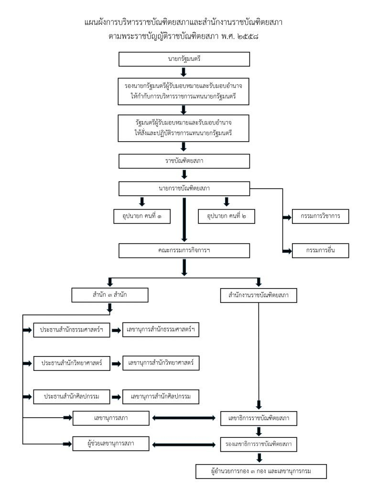

ตามพระราชบัญญัติราชบัณฑิตยสภา พ.ศ. 2558
แผนผังการบริหาร
ราชบัณฑิตยสภา สำนักทั้ง ๓ และสำนักงานราชบัณฑิตยสภา ทำงานร่วมกันอย่างไร
ภาพรวม
๒ ส่วนที่ทำงานร่วมกัน
ผู้วางนโยบาย
ราชบัณฑิตยสภา
นายก อุปนายก และราชบัณฑิตทุกคน วางนโยบายด้านวิชาการ ให้ความเห็นชอบข้อบังคับและระเบียบ
ผู้ดำเนินการ
สำนักงานราชบัณฑิตยสภา
เลขาธิการและกองทั้ง ๓ ดำเนินงานตามนโยบาย จัดทำพจนานุกรม สารานุกรม และให้บริการทางวิชาการ
เลขาธิการราชบัณฑิตยสภาทำหน้าที่เลขานุการสภา จึงเป็นผู้เชื่อมทั้ง ๒ ส่วนเข้าด้วยกัน มาตรา ๒๔
แผนผัง
สายการบริหาร อ่านจากบนลงล่าง
กำกับดูแล
นายกรัฐมนตรี
รองนายกรัฐมนตรีผู้รับมอบหมายกำกับการบริหารราชการแทนนายกรัฐมนตรี
รัฐมนตรีผู้รับมอบหมายสั่งและปฏิบัติราชการแทนนายกรัฐมนตรี
ราชบัณฑิตยสภา
ราชบัณฑิตยสภาราชบัณฑิตทุกคนเป็นกรรมการสภา
นายกราชบัณฑิตยสภา
- อุปนายก คนที่ ๑
- อุปนายก คนที่ ๒
- กรรมการวิชาการ
- กรรมการอื่น
คณะกรรมการกิจการฯเชื่อมประสานตามนโยบายของราชบัณฑิตยสภา
สำนัก ๓ สำนัก
- สำนักธรรมศาสตร์และการเมือง ประธานสำนักเลขานุการสำนัก
- สำนักวิทยาศาสตร์ ประธานสำนักเลขานุการสำนัก
- สำนักศิลปกรรม ประธานสำนักเลขานุการสำนัก
สำนักงานราชบัณฑิตยสภา
เลขาธิการราชบัณฑิตยสภาเลขานุการสภา
รองเลขาธิการราชบัณฑิตยสภาผู้ช่วยเลขานุการสภา
- กองธรรมศาสตร์และการเมือง
- กองวิทยาศาสตร์
- กองศิลปกรรม
- สำนักงานเลขานุการกรม
เอกสาร
แผนผังฉบับเผยแพร่

แผนผังการบริหารราชบัณฑิตยสภาและสำนักงานราชบัณฑิตยสภา ตามพระราชบัญญัติราชบัณฑิตยสภา พ.ศ. ๒๕๕๘ ฉบับที่สำนักงานเผยแพร่
อ่านต่อ